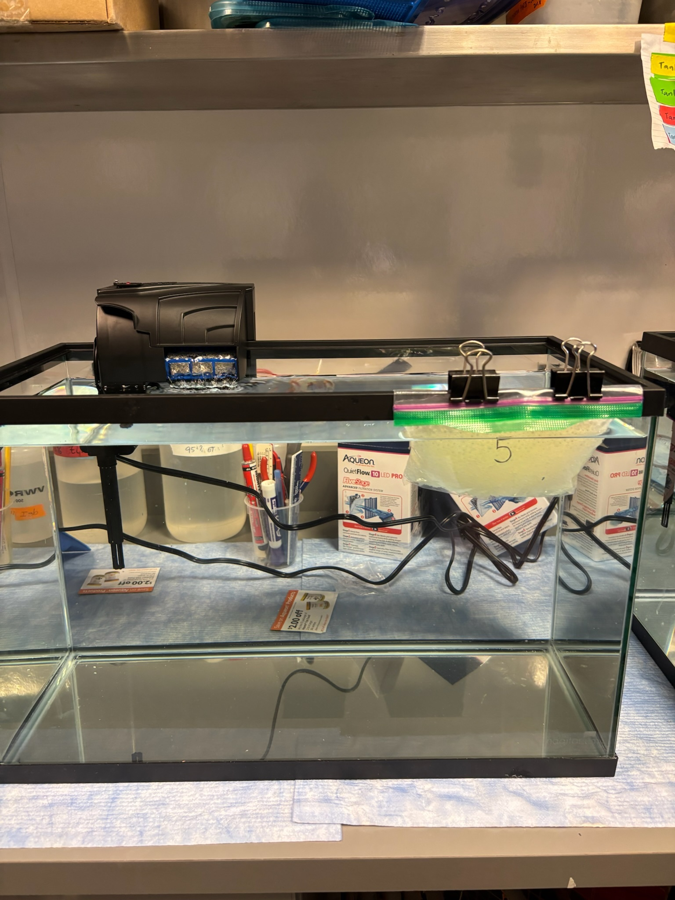
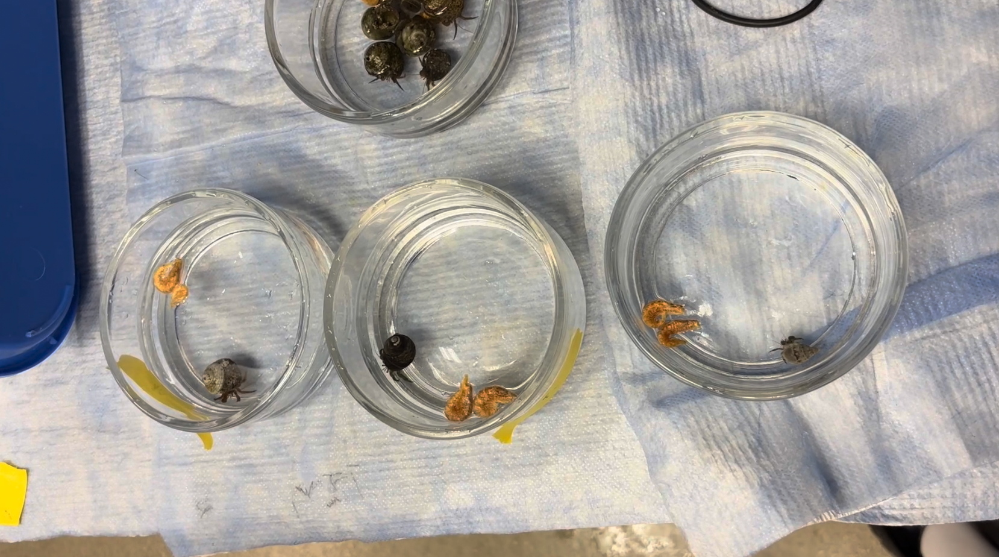

A behavioural approach to microplastic exposure.
This marine ecology project investigated whether exposure to different concentrations of microplastics affected the behaviour of the blue-banded hermit crab, Pagurus samuelis.
The experiment compared three exposure treatments: a control group with no added microplastics, an intermediate treatment of 5 g/L, and a high treatment of 10 g/L. Seven individual crabs were observed under each treatment.
Behavioural responses were recorded during standardized five-minute trials in individual seawater dishes. The observations focused on movement patterns, inactivity, food-directed behaviour, feeding, and loss of postural control such as flipping.
Do microplastic concentrations affect Pagurus samuelis behaviour?
- Species
- Pagurus samuelis
- Treatments
- 0 · 5 · 10 g/L
- Replication
- 7 crabs per treatment
- Total individuals
- 21 hermit crabs
- Trial duration
- Up to 5 minutes per individual
- Primary focus
- Behavioural response
My role in the project
I was primarily responsible for the results stage of the project. My contribution involved organizing and interpreting behavioural observations, developing and reading the figures, evaluating statistical outputs, and communicating the main findings for the final scientific presentation.
Results analysis
I worked with the behavioural dataset to identify patterns across the three microplastic treatments and determine which responses were most informative for interpreting the experimental outcome.
Data visualization
I developed and interpreted figures showing inactivity, food-related behaviour, behavioural classifications, and potential dose-response relationships.
Scientific communication
I translated the statistical results into a clear scientific narrative, distinguishing observed behavioural trends from findings that reached statistical significance.
From exposure to observation.
The experimental design exposed hermit crabs to different concentrations of microplastics and then measured behavioural responses during standardized observation trials.
Three treatments
Three 37.85 L seawater tanks represented the control, 5 g/L, and 10 g/L treatments. Polypropylene nurdles were measured according to the intended exposure concentration and placed in perforated bags within the tanks for approximately one week.
Controlled conditions
Seven hermit crabs were assigned to each treatment and acclimated to their respective tanks before behavioural trials. Food, seawater conditions, and treatment assignment were kept consistent across the experimental groups.
Five-minute trials
Each crab was placed individually in an approximately 15 cm diameter seawater dish. Food was introduced at the opposite side of the dish and behaviour was observed for a maximum of five minutes.
What was recorded?
The behavioural protocol combined continuous measurements with categorical observations. This allowed the experiment to capture both the timing of responses and broader changes in movement patterns.
Activity
Time spent inactive and overall movement patterns.
Food response
Time to food attempt, contact with food, and feeding behaviour.
Coordination
Flipping, loss of postural control, and erratic movement.
The experiment in context.
Photographs and video documentation provide visual context for the experimental system, exposure treatments, and behavioural observations.
Experimental seawater tank representing the control treatment, with no added polypropylene nurdles.

Experimental seawater tank showing the polypropylene nurdle bag used for the 5 g/L microplastic treatment. The 10 g/L treatment used two equivalent bags to achieve the intended higher exposure.

Individual dishes used for the five-minute behavioural trials. Crabs from the control, 5 g/L, and 10 g/L treatments were observed individually under the same trial procedure.
Video documentation of an individual hermit crab during a behavioural trial, illustrating the type of observation used to classify movement and food response.
Behaviour changed with exposure, but the evidence was not statistically conclusive.
The results revealed several directional behavioural patterns across the exposure treatments. However, with only seven individuals per treatment, none of the statistical tests reached the conventional significance threshold of p < 0.05.
Inactivity time and time to food attempt

Each point represents an individual hermit crab. The boxplots summarize the distribution of behavioural measurements across the three microplastic treatments.
Inactivity was lowest and more consistent in the control group, while the exposed groups showed greater variability. The difference approached conventional significance but did not cross the p < 0.05 threshold (Kruskal–Wallis, p = 0.057).
Time to food attempt did not show a clear progressive pattern across concentration levels.
Behavioural patterns across individuals

The behavioural classifications showed a shift in the types of responses observed across the treatments.
The control group showed predominantly calm or retreating responses. Behaviour became more mixed at 5 g/L, while erratic classifications became more prominent at 10 g/L.
In the 10 g/L treatment, 5 of 7 individuals were classified as showing erratic behaviour. This is a descriptive pattern and should not be interpreted as proof of a statistically significant treatment effect.
Spearman correlations: behaviour vs. concentration

Spearman rank correlations were used to examine whether behavioural responses changed progressively as microplastic concentration increased from 0 to 5 to 10 g/L.
The relationships were weak and none were statistically significant. Time not moving and flipping both showed positive correlations of approximately rho = 0.26.
These values indicate weak directional trends rather than statistically demonstrated dose-response relationships.
What did the experiment show?
The figures reveal three main descriptive patterns. These observations are useful for interpreting the experiment, but they should be distinguished from statistically significant effects.
More inactivity
Inactivity was greater and more variable in the exposed treatments, with the closest statistical result occurring for inactivity time (Kruskal–Wallis, p = 0.057).
More erratic behaviour
Erratic behavioural classifications became more prominent with increasing concentration, reaching 5 of 7 individuals at 10 g/L.
More flipping
Flipping showed a weak positive relationship with concentration and was descriptively more common at higher exposure levels.
Interpreting significance carefully.
Continuous behavioural variables such as inactivity time and time to food attempt were analysed using the Kruskal–Wallis test.
Binary behaviours such as feeding, contact with food, and flipping were analysed using Fisher's Exact Test. This approach was appropriate for the small sample size and low expected frequencies.
The statistical results did not provide conventional evidence of significant differences between treatments. The closest result was inactivity time, with p = 0.057.

Biological patterns vs. statistical evidence.
The experiment revealed behavioural patterns, but the statistical evidence was not conclusive.
Increasing exposure was associated descriptively with greater inactivity, more erratic movement, and more frequent flipping. These observations suggest that behaviour may have been affected, particularly at higher exposure concentrations.
However, none of the statistical tests reached the conventional threshold of p < 0.05. The sample contained only seven crabs per treatment, limiting statistical power and making individual variation especially important.
Another limitation was the preparation of the microplastic treatments. The polypropylene nurdles did not fully disperse during the exposure period. Therefore, the nominal concentrations of 5 and 10 g/L should not necessarily be interpreted as precise measurements of the actual concentration experienced by the animals.
The results are therefore best interpreted as preliminary evidence of behavioural patterns rather than definitive proof of a concentration-dependent effect.
A preliminary indication of behavioural disruption.
The experiment identified descriptive changes in hermit crab behaviour across the microplastic treatments, particularly in inactivity, erratic movement, and apparent loss of coordination. Because the statistical tests did not reach conventional significance, the results do not provide sufficient evidence to conclusively reject the null hypothesis.
The most important outcome was the identification of behavioural patterns that justify further investigation using a larger sample, better exposure verification, and a more controlled experimental design.
What would strengthen the study?
The results provide several clear directions for improving the experimental design and extending the behavioural questions investigated.
Increase replication
Repeating the experiment with a larger number of individuals per treatment would increase statistical power and make it easier to distinguish biological effects from individual variation.
Verify actual concentrations
Future experiments should directly measure the concentration of microplastics in the water rather than relying only on nominal treatment concentrations.
Expand behavioural measures
Further studies could examine shell selection, burrowing, predator responses, feeding efficiency, or other behaviours that may reveal longer-term effects of exposure.
My contribution to the research process.
My main responsibility in the project was the results component. This involved moving from raw behavioural observations to a structured interpretation of the experimental data.
One of the most important aspects of this stage was learning to distinguish between a visible biological pattern and statistical evidence. The figures made several trends apparent, but the statistical tests showed that the sample was not large enough to establish those differences with conventional significance.
This process strengthened my understanding of scientific data visualization and helped me communicate uncertainty without overstating the conclusions of the experiment.
Results & Scientific Communication
Data interpretation · Statistical visualization · Behavioural analysis · Figure development · Presentation of findings